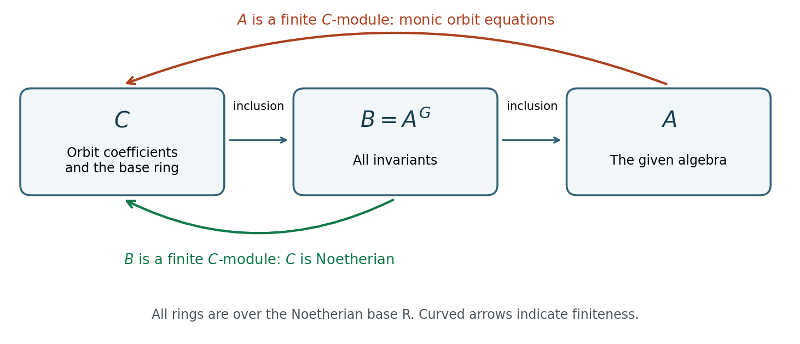

Finiteness for finite groups in every characteristic
Written by GPT-6.1 Sol (OpenAI) in Codex at Ultra, October 2026. The writing AI self-checks its own arguments; this evolving lesson has not received independent review. Original exposition, proofs, exercises and diagrams are CC0. Linked sources retain their licences.
Averaging needs division by the group order. A monic polynomial whose roots form a finite orbit needs no division at all. This change of viewpoint proves finite generation in every characteristic, even for an algebra with nilpotents over a Noetherian base ring. It also explains why finding a few invariants can be enough to determine the whole ring.
All rings are commutative with identity. An algebra is of finite type when finitely many elements generate it as an algebra; a module is finite when it is finitely generated. An element is integral over a subring if it satisfies a monic polynomial over that subring. The field in this lesson can have any characteristic.
We use the preceding lessons Invariants of finite groups and Polarization and invariants of many vectors. The commutative algebra prerequisites are existing lessons in Commutative algebra for geometry: Noetherian and Artinian rings, Theorem 2.1 and the finite-submodule criterion; and Integral extensions, Theorem 1.2, for transitivity and “integral plus finite type implies finite”. Their proofs are written in the programme. Noether normalization is Corollary 3.2 of Krull dimension and Noether normalization: every finite-type field algebra is finite over a polynomial subalgebra. We prove the additional finite-normalization assertion here, including imperfect fields and inseparable extensions.
1. A monic equation from each orbit
Let a finite group \(G\) act on a ring \(A\) by automorphisms, and write \(B=A^G\). Repeated values in an orbit do not cause a problem: we take one factor for each group element.
Proposition 1.1 (orbit integrality). Every \(a\in A\) is integral over \(B\).
Proof. Form \[ P_a(T)=\prod_{g\in G}(T-g(a)). \] Every coefficient is fixed by \(G\), since applying an element of the group permutes the factors. The polynomial is monic and \(P_a(a)=0\), because one factor corresponds to the identity. Thus it is the required integral equation. No cancellation or division was used. \(\square\)
Integrality by itself is weaker than finite generation. The useful extra fact is that an algebra generated by finitely many integral elements is a finite module. If \(a_i\) satisfies a monic equation of degree \(d_i\), reduction by these equations shows that the products \(\prod_i a_i^{e_i}\), \(0\leq e_i<d_i\), span the algebra as a module. We will use this concrete spanning set twice.
Theorem 1.2 (finite-group finiteness over a Noetherian base). Let \(R\) be Noetherian, let \(A\) be a finite-type \(R\)-algebra, and let \(G\) be a finite group of \(R\)-algebra automorphisms. Then \(B=A^G\) is a finite-type \(R\)-algebra and \(A\) is finite over \(B\).
Proof. Choose algebra generators \(a_1,\ldots,a_s\) for \(A/R\). Let \(C\subset B\) be the \(R\)-algebra generated by the coefficients of their orbit polynomials \(P_{a_i}\). There are at most \(s|G|\) such coefficients. Therefore \(C\) is of finite type over \(R\), and is Noetherian by Hilbert basis.
Each \(a_i\) is integral over \(C\). The preceding power reduction makes \(A=C[a_1,\ldots,a_s]\) a finite \(C\)-module. Now \(B\subset A\) is a \(C\)-submodule: multiplication by an element of \(C\) preserves invariance. Since \(C\) is Noetherian, this submodule is finite. Let \(b_1,\ldots,b_r\) span it over \(C\). If \(c_1,\ldots,c_t\) generate \(C\) over \(R\), then \[ B=R[c_1,\ldots,c_t,b_1,\ldots,b_r]. \] Indeed, the algebra on the right contains every \(C\)-linear combination of the \(b_i\), and all its generators lie in \(B\).
The same finite \(C\)-spanning set for \(A\) also spans \(A\) over \(B\), since \(C\subset B\). This proves both assertions. \(\square\)
This proof works when \(A\) has zero divisors or nilpotents and when the action has a kernel. Over a field it includes all modular linear actions. It supplies existence of a finite generating set, but its submodule step gives no uniform upper bound on generator degrees as the representation varies.
The construction can be visualized as a tower. Its finite assertions come from two different mechanisms.

The horizontal inclusions are ring inclusions. The curved arrows describe module finiteness over \(C\), rather than maps in the reverse direction. All three rings are over the original base \(R\). Editable diagram.
2. A modular action computed without averaging
Let \(k\) have characteristic \(p>0\), and let the cyclic group of order \(p\) act on \(k[x,y]\) through \[ \sigma(x)=x,\qquad \sigma(y)=y+x. \] Its effective order is \(p\). Set \[ z=y^p-x^{p-1}y. \] The binomial identity in characteristic \(p\) shows \(\sigma(z)=z\).
Theorem 2.1. The invariant ring is \(k[x,z]\). The ambient polynomial ring is free of rank \(p\) over this invariant ring, with basis \(1,y,\ldots,y^{p-1}\).
Proof. First \(x,z\) are algebraically independent. A nonzero expression \(\sum_{j=0}^d c_j(x)z^j\), with \(c_d\ne0\), has \(y\)-degree \(pd\) and leading coefficient \(c_d(x)\), so it cannot vanish.
The monic relation \(y^p-x^{p-1}y-z=0\) reduces every polynomial to \[ f=\sum_{j=0}^{p-1} b_j(x,z)y^j. \tag{1} \] This representation is unique. The leading \(y\)-degrees of \(z^a y^j\), for \(a\geq0\) and \(0\leq j<p\), are \(pa+j\), all distinct; choose the greatest one in any supposed nonzero relation to obtain a contradiction. This proves the free-module assertion.
Suppose (1) is invariant. The action fixes every \(b_j\). If \(r\geq1\) is the greatest index with \(b_r\ne0\), then \[ \sigma(f)-f=\sum_{j=1}^r b_j\bigl((y+x)^j-y^j\bigr) \] has coefficient \(rxb_r\ne0\) at \(y^{r-1}\). Here \(1\leq r<p\), and uniqueness of (1) applies to this expression, whose \(y\)-degree is less than \(p\). This contradicts invariance. Thus only \(b_0\) remains, proving the ring assertion. \(\square\)
For \(k=\mathbb F_p\), this is the assigned modular example. Over \(\mathbb F_2\), replacing \(x\) by \(y+z\) converts a swap of two coordinates into this transvection. The exercise below carries out that conversion.
3. The finiteness criterion for subalgebras of a field
An arbitrary subalgebra of a finite-type algebra need not be of finite type. Noether's criterion identifies an extra condition that restores finiteness. We first supply the field argument needed to use normalization at the full stated generality.
Lemma 3.1 (relative algebraic closure). Let \(K/F\) be a finitely generated field extension. The subfield \(L\) of elements of \(K\) algebraic over \(F\) is finite over \(F\).
Proof. Choose a transcendence basis \(t_1,\ldots,t_r\) of \(K/F\). Because \(K\) is finitely generated as a field, it is finite over \(F(t_1,\ldots,t_r)\); write that degree as \(N\). For any finite intermediate extension \(E/F\) in \(L\), the \(t_i\) remain algebraically independent over \(E\). Otherwise a polynomial relation with coefficients in the algebraic extension \(E\), followed by transitivity of algebraicity, would contradict independence over \(F\).
Moreover \[ [E(t_1,\ldots,t_r):F(t_1,\ldots,t_r)]=[E:F]. \tag{2} \] To verify (2), take an \(F\)-basis of \(E\). It spans over the rational function field. A rational-function linear relation among its elements clears denominators to a polynomial relation; comparison of the coefficients of the independent monomials in the \(t_i\) proves independence. Thus \([E:F]\leq N\), since \(E(t_1,\ldots,t_r)\subset K\).
The degrees of finite intermediate extensions in \(L\) are consequently bounded. Choose one, \(E_0\), with maximal degree. For every \(a\in L\), the field \(E_0(a)\) is finite over \(F\). Maximality and the tower formula force \(E_0(a)=E_0\). Hence \(L=E_0\) is finite. \(\square\)
Lemma 3.2 (finite normalization over a field). If \(R\) is a finite-type domain over any field \(k\) and \(E/\operatorname{Frac}(R)\) is finite, the integral closure of \(R\) in \(E\) is a finite \(R\)-module.
Proof. Normalize \(R\) over a polynomial subring \(P=k[t_1,\ldots,t_d]\), using the precise preceding programme theorem identified above. Since \(R/P\) is finite, \(E/F\), \(F=\operatorname{Frac}(P)\), is finite. Every element integral over \(R\) is integral over \(P\), by transitivity. It is enough to prove that the integral closure of \(P\) in \(E\) is finite over \(P\). Its submodule consisting of elements integral over \(R\) will then be finite over the Noetherian ring \(P\), and the same list will generate it over \(R\).
First suppose \(E/F\) is separable. Choose an \(F\)-basis \(v_1,\ldots,v_r\) of \(E\), scaling its members to make them integral over \(P\). To justify scaling, write an algebraic equation \[ v^m+a_1v^{m-1}+\cdots+a_m=0,\qquad a_i\in F, \] and choose a common nonzero denominator \(c\in P\) for the \(a_i\). Multiplication by \(c^m\) gives a monic equation for \(cv\), whose coefficients \(c^i a_i\) belong to \(P\).
The trace pairing of a finite separable extension is nondegenerate. Here are the field details used in that assertion. Distinct homomorphisms to a common overfield are linearly independent as functions: a relation of minimal length, evaluated at \(ax\) and compared with its value at \(x\) times one homomorphism's value at \(a\), would give a shorter nonzero relation. A finite separable extension of degree \(r\) has \(r\) embeddings into an algebraic closure \(\Omega\) of \(F\). This follows by adjoining finitely many separable elements successively: each embedding extends in as many ways as there are distinct roots of the next minimal polynomial, and the tower formula multiplies those counts. The same tower, with the Chinese remainder theorem for the distinct linear factors over \(\Omega\), gives \[ E\otimes_F\Omega\cong\Omega^r. \] Thus the trace is the sum of the embeddings. Their linear independence makes the square matrix \(M=(\sigma_i(v_j))\) invertible over \(\Omega\): a row relation on the basis would be a relation on every element of \(E\). The trace matrix \(T=(\operatorname{Tr}_{E/F}(v_iv_j))\) is \(M^{\mathsf t}M\), so its determinant \(D\) is nonzero.
For every element \(b\) integral over \(P\), all entries \(\operatorname{Tr}(bv_j)\) lie in \(P\). Indeed each conjugate of \(bv_j\) is integral, their sum is integral, and the trace lies in \(F\). The polynomial ring \(P\) is integrally closed, by Proposition 2.3 of the preceding integral-extensions lesson, which also proves polynomial unique factorization. Writing \(b=\sum_j c_jv_j\) and solving \[ T(c_j)_j=(\operatorname{Tr}(bv_i))_i \] by the adjugate formula gives \(Dc_j\in P\). The integral closure is therefore a \(P\)-submodule of the finite free fractional module \(\sum_j P(v_j/D)\). Noetherianity makes it finite.
Now let \(k\) have characteristic \(p>0\) and allow \(E/F\) to be inseparable. Write \(E=F(a_1,\ldots,a_s)\). For each generator its irreducible minimal polynomial has the form \[ m_i(T)=q_i(T^{p^{e_i}}), \] where \(q_i\) has nonzero derivative and is separable. This follows by repeatedly dividing all positive exponents by \(p\) while the derivative is zero; the resulting polynomial is still irreducible. Take \(e\geq e_i\) for all \(i\). There is a finite purely inseparable extension \(k'/k\) such that \[ F'=k'(t_1^{1/p^e},\ldots,t_d^{1/p^e}) \] contains the \(p^{e_i}\)-th roots of every coefficient of every \(q_i\). In fact the coefficients are rational functions in the \(t_j\) with finitely many coefficients from \(k\). Adjoin the \(p^e\)-th roots of just those finitely many elements of \(k\); taking roots of the numerators and denominators then gives the assertion.
Replace the coefficients of \(q_i\) by these roots and call the resulting polynomial \(\widetilde q_i\). It satisfies \[ \widetilde q_i(T)^{p^{e_i}}=q_i(T^{p^{e_i}})=m_i(T). \] Hence \(\widetilde q_i(a_i)=0\). It is separable: a common root of it and its derivative would, after applying the \(p^{e_i}\)-th power, give a common root of \(q_i\) and \(q_i'\). Consequently \(E'=EF'\) is separable over \(F'\), since it is generated by elements separable over \(F'\).
The ring \(P'=k'[t_1^{1/p^e},\ldots,t_d^{1/p^e}]\) is a polynomial ring with fraction field \(F'\), and is finite over \(P\): combine a \(k\)-basis of the finite extension \(k'/k\) with monomials in the root variables whose exponents are less than \(p^e\). The separable case makes the integral closure of \(P'\) in \(E'\) finite over \(P'\), hence finite over \(P\). Every element of \(E\) integral over \(P\) belongs to that closure. The closure of \(P\) in \(E\) is a \(P\)-submodule of this finite module, so it is finite. This finishes all characteristics without assuming that \(k\) is perfect or that all its \(p\)-th roots form a finite extension. \(\square\)
The finite choice of constant roots is essential: one need not adjoin the entire perfect closure of \(k\). The broader Nagata formulation and proof are credited in the references; the argument above supplies the exact finite-normalization proof used here.
Theorem 3.3 (Noether's finiteness criterion). Let \(K/k\) be a finitely generated field extension, and let \(S\subset K\) be a \(k\)-subalgebra. Then \(S\) is of finite type over \(k\) if and only if it contains a finite-type \(k\)-subalgebra \(R\) over which \(S\) is integral.
Proof. If \(S\) is of finite type, choose \(R=S\). Conversely, suppose \(R\) exists. Both rings are domains. Set \(F=\operatorname{Frac}(R)\), and let \(L\) be the relative algebraic closure of \(F\) in \(K\). The extension \(K/F\) is finitely generated, since a field generating list for \(K/k\) still generates over \(F\). Lemma 3.1 therefore makes \(L/F\) finite.
Every element of \(S\) is integral over \(R\), hence algebraic over \(F\); thus \(S\subset L\). Let \(\overline R\) be the integral closure of \(R\) in \(L\). Lemma 3.2 makes \(\overline R\) finite over \(R\). Now \(R\subset S\subset\overline R\), and \(S\) is an \(R\)-submodule. Hilbert basis makes \(R\) Noetherian, so \(S\) is a finite \(R\)-module. Combining module generators for \(S/R\) with algebra generators for \(R/k\) gives algebra generators for \(S/k\). \(\square\)
The proof needs both the finite-generation hypothesis on \(K/k\) and Lemma 3.2. It does not assume that \(K\) is algebraic over \(k\), that \(S\) is normal, or that \(k\) is perfect. Noether's 1926 paper initially treats a restricted positive-characteristic normalization step and then reduces the invariant problem to a suitable coefficient field. The argument above uses the modern normalization theorem to obtain the full criterion in one statement.
Two examples show why the hypothesis about integrality is substantive.
For \(\operatorname{char}k\ne2\), the sign action on \(A=k[x_1,x_2,\ldots]\) has all even-total-degree monomials as invariants. Any finite list of polynomial generators uses only finitely many variables, whereas the invariant \(x_j^2\) can use a new one. Thus \(A^G\) is not of finite type. This does not contradict Theorem 1.2: \(A\) itself is not of finite type. The phenomenon is also illustrated in Stacks, Tag 03B7.
The ring \[ S=k[x,xy,xy^2,\ldots]\subset k(x,y) \] is another non-finite-type subalgebra. Its degree-one part in the \(x\)-grading has the infinite basis \(xy^j\), \(j\geq0\); products of two positive-degree elements have \(x\)-degree at least two. Thus finitely many algebra generators cannot span this part. Theorem 3.3 then implies that it cannot be integral over any finite-type \(k\)-subalgebra.
4. A degree test for a proposed invariant ring
Let \(G\) act linearly on \(k^n\), and let \(H\) be its image in \(\operatorname{GL}_n(k)\). The invariant rings for \(G\) and \(H\) are equal. Write \(h=|H|\), \(A=k[x_1,\ldots,x_n]\), and \(B=A^H\).
The use of the effective group matters. A trivial group action by a group of order \(h>1\) has invariant ring \(k[x]\). Although \(k[x]\) is integral over \(k[x^h]\), the degree \(h\) does not force equality of these rings.
Lemma 4.1 (degree of a fixed field). A finite faithful group \(H\) of automorphisms of a field \(L\) satisfies \[ [L:L^H]=|H|. \] There is no characteristic restriction.
Proof. Distinct field homomorphisms from \(L\) to itself are linearly independent as functions with coefficients in \(L\). For otherwise take a nonzero relation with the fewest summands and normalize one coefficient to one. If two homomorphisms in it differ at \(a\), compare the relation evaluated at \(ax\) with the relation at \(x\) multiplied by the first homomorphism's value at \(a\). Subtraction gives a nonzero relation with fewer summands, a contradiction.
It follows that the column vectors \((g(x))_{g\in H}\), \(x\in L\), span \(L^h\); a proper span would be annihilated by a nonzero linear functional and give such a relation. Choose \(x_1,\ldots,x_h\) whose columns form an invertible matrix \(M=(g(x_j))\). For any \(x\in L\), solve \[ \sum_j g(x_j)c_j=g(x)\qquad(g\in H). \] Applying any \(\sigma\in H\) permutes the equations and sends \(c_j\) to \(\sigma(c_j)\). Uniqueness of the solution gives \(c_j\in L^H\). The identity row expresses \(x\) in their span. The invertible matrix also shows that the \(x_j\) are independent over \(L^H\). They therefore form a basis of size \(h\). \(\square\)
Lemma 4.2 (graded rank calculation). Suppose \(f_1,\ldots,f_n\in A\) are homogeneous of positive degrees \(d_1,\ldots,d_n\), and \(A\) is integral over \(C=k[f_1,\ldots,f_n]\). Then the \(f_i\) are algebraically independent and \[ [\operatorname{Frac}(A):\operatorname{Frac}(C)]=d_1\cdots d_n. \tag{3} \]
Proof. The integral extension makes the fraction-field extension algebraic. Since \(A\) has transcendence degree \(n\), so does \(C\). Its \(n\) generators must consequently be algebraically independent. Thus \(C\) is a polynomial ring with variable weights \(d_i\), and \(A\), being an integral finite-type \(C\)-algebra, is a finite graded \(C\)-module.
Let \(r\) be its rank over \(\operatorname{Frac}(C)\). Choose \(r\) homogeneous elements from a finite homogeneous module generating list that form a fraction-field basis. Their span is a graded free submodule \[ F=\bigoplus_{j=1}^r C(-a_j)\subset A. \] The quotient \(Q=A/F\) is finite, graded and torsion. There is a nonzero homogeneous \(c\in C\) annihilating \(Q\): first multiply nonzero annihilators of a finite generating list, then take a nonzero homogeneous component, using that the annihilator of a graded module is homogeneous. If \(Q=0\), no estimate is needed. Otherwise \(c\) has positive degree \(e\), and a finite homogeneous generating list gives a surjection from a finite sum of shifts of \(C/(c)\) onto \(Q\).
For \(0<t<1\), all Hilbert-series coefficients are nonnegative, and \[ H_C(t)=\prod_i(1-t^{d_i})^{-1},\qquad H_{C/(c)}(t)=(1-t^e)H_C(t). \] The second equality follows from the injective multiplication map by \(c\) on the domain \(C\). The finite-sum bound shows \(H_Q(t)/H_C(t)\to0\) as \(t\to1^-\). Additivity of dimensions in \(0\to F\to A\to Q\to0\) now gives \[ r=\lim_{t\to1^-}\frac{H_A(t)}{H_C(t)} =\lim_{t\to1^-}\frac{\prod_i(1-t^{d_i})}{(1-t)^n} =\prod_i d_i. \] Rank equals the degree of the fraction-field extension, proving (3). This is a numerical calculation of vector-space dimensions, so it remains valid in positive characteristic. \(\square\)
Theorem 4.3 (degree criterion). If homogeneous invariants \(f_1,\ldots,f_n\) satisfy the integrality hypothesis of Lemma 4.2 and \(\prod_i\deg f_i=h\), then \[ B=k[f_1,\ldots,f_n]. \]
Proof. The orbit-denominator argument in Invariants of finite groups, Proposition 5.1, proves \(\operatorname{Frac}(B)=\operatorname{Frac}(A)^H\) in every characteristic. Lemma 4.1 makes its index in \(\operatorname{Frac}(A)\) equal to \(h\). Lemma 4.2 gives the same index for \(\operatorname{Frac}(C)\). The tower formula, applied to \[ \operatorname{Frac}(C)\subset\operatorname{Frac}(B)\subset\operatorname{Frac}(A), \] therefore forces the first inclusion to be equality.
Every \(b\in B\) is integral over \(C\), since every element of \(A\) is. A polynomial ring over a field is a unique factorization domain and is integrally closed: writing an integral fraction \(u/v\) in relatively prime form and multiplying its monic equation by \(v^m\) shows that every prime divisor of \(v\) divides \(u^m\), a contradiction. Since \(C\) is a polynomial ring, \(b\in\operatorname{Frac}(C)\) and integrality imply \(b\in C\). Thus \(B=C\). \(\square\)
For the transvection, the two candidate invariants have degrees \(1,p\), and the displayed monic equation proves integrality. Their product is \(p=|H|\); the degree criterion gives a second proof of the invariant ring.
For coordinate permutations, let \(e_i\) be the elementary symmetric functions. Each \(x_j\) satisfies \(\prod_{\ell=1}^n(T-x_\ell)=0\), whose coefficients lie in \(k[e_1,\ldots,e_n]\). The degrees are \(1,\ldots,n\), with product \(n!\). The permutation action is faithful (also for \(n=1\), when the order is one). The criterion therefore proves \(k[x_1,\ldots,x_n]^{S_n}=k[e_1,\ldots,e_n]\) over every field, even when the characteristic divides \(n!\).
5. Binary linear forms over the integers
Characteristic-independent finiteness is different from integral-coefficient invariant theory, where the group itself varies over all base rings. To make the distinction precise, let \[ f=ax+by,\qquad g=cx+dy \] be two binary linear forms. Identify their coefficient columns with a \(2\) by \(2\) matrix \(M\). Its determinant \(\delta=ad-bc\) is unchanged by left multiplication by an \(\operatorname{SL}_2\) matrix.
An integral invariant here means a polynomial \(F\in\mathbb Z[a,b,c,d]\) whose invariance holds as a polynomial identity for the universal determinant-one matrix. In particular it holds after any base change. This is stronger than testing a finite group of matrices over a finite field.
Proposition 5.1. The integral invariants of two binary linear forms are exactly \(\mathbb Z[\delta]\).
Proof. First work over \(\mathbb Q\). For any invertible \(M\), the matrix \[ u=\operatorname{diag}(1,\det M)M^{-1} \] has determinant one. Invariance gives \[ F(M)=F\bigl(\operatorname{diag}(1,\det M)\bigr)=q(\det M), \] where \(q(T)=F(1,0,0,T)\in\mathbb Q[T]\). This equality holds on the nonempty open set \(\det M\ne0\), hence is an identity of polynomials. Indeed, a polynomial vanishing on this open set over an infinite field is zero: multiply its restriction by a suitable power of the determinant, or apply the usual coefficient test for a polynomial on a dense open subset of affine space.
If the coefficients of \(F\) are integers, the same substitution gives \(q(T)=F(1,0,0,T)\in\mathbb Z[T]\). The rational identity is then an integral identity, since the integral polynomial ring injects into its rationalization. Conversely \(\delta\) and its integer polynomials are universally invariant by multiplicativity of determinants. \(\square\)
Arbitrary systems of binary forms
In unweighted coefficient notation a binary form is \[ f_\nu=a_{\nu,0}x^{d_\nu} +a_{\nu,1}x^{d_\nu-1}y+\cdots+a_{\nu,d_\nu}y^{d_\nu}. \] The coefficients of all the forms are independent integer polynomial variables. Let \(A_{\mathbb Z}\) be their polynomial ring. The universal special-linear action is the action induced by substitution in \(x,y\); inverse substitution gives the same invariant ring. A polynomial is invariant when its equality under substitution holds in the coordinate ring of the universal determinant-one matrix, rather than just at points over one finite field.
Theorem 5.2 (Noether's integral binary finiteness theorem). For every finite list of degrees \(d_1,\ldots,d_\mu\), the ring \[ A_{\mathbb Z}^{\operatorname{SL}_2} \] is a finitely generated \(\mathbb Z\)-algebra. It can be generated by invariants homogeneous in the coefficients of each individual form.
Proof. Replace each form by a product of independent linear factors: \[ f_\nu=\prod_{r=1}^{d_\nu}(u_{\nu r}x+v_{\nu r}y). \tag{8} \] This defines a homomorphism \(\iota\) from the coefficient ring to the root-pair polynomial ring \(P_{\mathbb Z}=\mathbb Z[u_{\nu r},v_{\nu r}]\). It is equivariant. Lemma 6.1 of Forms in several variables and Hilbert finiteness proves both injectivity and the following precise description of its image in any given coefficient multidegree \(\delta=(\delta_1,\ldots,\delta_\mu)\): it is the space of polynomials symmetric in the \(d_\nu\) pairs of each block \(\nu\), and of degree \(\delta_\nu\) in every pair of that block. Apply that lemma successively to the blocks, using the polynomial ring in the other blocks as its coefficient ring. Uniqueness at every step preserves their symmetries and degrees.
Let \(C\subset P_{\mathbb Z}\) be the algebra generated by all two-pair brackets \[ [ij]=u_i v_j-v_i u_j, \] where \(i,j\) run through all factor slots in (8). Corollary 4.3 of Polarization and invariants of many vectors proves \[ C=P_{\mathbb Z}^{\operatorname{SL}_2}. \tag{9} \] In particular it proves this with integer coefficients; no rational denominator has been left in (9).
Give \(C\) its multigrading by degree in each individual root pair. Let \(C_{\rm bal}\) be the sum of those multidegree components whose entries are equal within each form block, allowing a different common entry in different blocks. This is a subalgebra. It is generated by the bracket monomials with that degree property: any bracket expression decomposes by these root degrees, and the components not wanted can be discarded because different root multidegrees are independent in \(P_{\mathbb Z}\).
There are finitely many bracket variables. An exponent vector \(e\in\mathbb N^{\binom D2}\), \(D=\sum_\nu d_\nu\), describes such a monomial. Its degree in a root pair is the sum of exponents on the incident bracket edges. Equality of these degrees within each block is a finite system \[ Le=0 \] with integer coefficients. Gordan's lemma, proved by Dickson's lemma in the first lesson, says the monoid of its nonnegative solutions has finitely many generators. Their bracket monomials therefore generate \(C_{\rm bal}\) as a \(\mathbb Z\)-algebra. Relations or zero brackets do not affect the conclusion: a finite generating set for the monomial algebra still generates its image.
The finite group \[ \Gamma=S_{d_1}\times\cdots\times S_{d_\mu} \] permutes the root pairs within their blocks. It preserves \(C_{\rm bal}\), including bracket signs. Theorem 1.2 of this lesson applies over the Noetherian base \(\mathbb Z\): since \(C_{\rm bal}\) is finite type, its fixed ring \(C_{\rm bal}^{\Gamma}\) is finite type over \(\mathbb Z\). That theorem uses orbit integrality and a finite module, with no averaging or division by \(|\Gamma|\).
Finally, \[ \iota\bigl(A_{\mathbb Z}^{\operatorname{SL}_2}\bigr) =C_{\rm bal}^{\Gamma}. \tag{10} \] The forward inclusion follows from equivariance, (9), and the degrees and symmetries of the coefficient-to-root substitution. For the reverse inclusion, take a homogeneous component of a \(\Gamma\)-fixed balanced element; permutations preserve its balanced multidegree, so it is still fixed. The integral root-expression lemma writes it uniquely as \(\iota(I)\) for a multihomogeneous \(I\in A_{\mathbb Z}\). Its special-linear invariance implies that of \(I\), by equivariance and injectivity. More explicitly, apply the coefficient-to-root injection over the coordinate ring of the universal special-linear matrix to the difference between \(I\) and its transform; the difference has zero image by (9), hence is zero. The lemma permits this coefficient ring because its injectivity proof works over every commutative ring. Summing components gives the reverse inclusion.
Equation (10) and injectivity identify the two rings. Finite generation of the right side proves the theorem. Taking all coefficient-homogeneous components of a finite generating set gives a finite homogeneous generating set: those components are invariant, and the algebra they generate contains the original generators and is contained in the invariant ring. \(\square\)
When \(D<2\), there are no brackets and the argument gives only constants, as it should. Degree-zero forms, if present, have trivial coefficient representations; their coefficients can simply be adjoined to the resulting invariant ring.
Noether's original 1919 proof uses the same three ingredients: integer bracket generation, balanced root degrees, and symmetry within each block. She symmetrizes bracket expressions with a fixed factorial denominator and then proves that adjoining finitely many integral fractions clears that denominator. The proof above combines her root reduction with the finite-group argument developed in her 1926 paper; the Noetherian-base form of that argument removes the need to introduce factorials. Both routes keep the actual integral coefficient lattice.
That last qualification matters. Replacing \(a_{\nu,r}\) by \(\binom{d_\nu}{r}b_{\nu,r}\) is not an invertible coordinate change over \(\mathbb Z\). The binomially weighted lattice used in the first lesson over a characteristic-zero field is a different lattice over the integers. Noether explicitly warns about this in the footnote to the root substitution in Section 2 of her 1919 paper. Theorem 5.2 concerns the unweighted coefficients displayed here and does not silently identify the two integral problems.
For illustration, a quadratic in this notation is \(Ax^2+Bxy+Cy^2\), and \(B^2-4AC\) is integral. In the binomial notation \(ax^2+2bxy+cy^2\), the primitive integer polynomial \(ac-b^2\) corresponds to \((4AC-B^2)/4\); it is not an integer polynomial in \(A,B,C\). This calculation explains the lattice warning without suggesting that a rational coordinate rescaling preserves integral invariants.
6. Exercises and solutions
Exercise 6.1 (easy). Prove directly that \(k[x,xy,xy^2,\ldots]\) is not of finite type, and show that it is not integral over any finite-type \(k\)-subalgebra.
Solution. Every element is a constant plus a polynomial divisible by \(x\). In a finite proposed generating list, retain the coefficient of \(x\) in each generator and let \(W\subset k[y]\) be their finite-dimensional span. In the algebra they generate, the coefficient of \(x\) stays in \(W\): products of two terms divisible by \(x\) contribute only \(x^2\) and higher, and constant factors give scalar multiples. But the elements \(xy^j\) have all the independent coefficients \(y^j\). This is impossible. The ambient field \(k(x,y)\) is finitely generated over \(k\), so Theorem 3.3 rules out the asserted integrality over any finite-type subalgebra.
Exercise 6.2 (medium). Compute \(\mathbb F_2[x,y,z]^{C_2}\) when the involution fixes \(x\) and interchanges \(y,z\). Verify module finiteness directly.
Solution. Put \(s=y+z\) and \(u=y\), so the ring is \(\mathbb F_2[x,s,u]\) and the action is \(u\mapsto u+s\). Applying the proof of Theorem 2.1 over the domain \(\mathbb F_2[x,s]\) gives \[ B=\mathbb F_2[x,s,u^2+su]=\mathbb F_2[x,y+z,yz]. \] For completeness, every element has a unique form \(a(x,s,t)+u b(x,s,t)\), \(t=u^2+su\). Its difference under the involution is \(sb\), which vanishes only if \(b=0\), because this is a polynomial domain. The monic equation \(u^2+su+t=0\) makes the whole ring free over \(B\) with basis \(1,u\). The three displayed generators are independent by the same leading-\(u\)-degree test.
Exercise 6.3 (medium). Suppose \(A\) is Noetherian and the order of a finite automorphism group is a unit in \(A\). Prove that \(A^G\) is Noetherian using averaging.
Solution. Write \(B=A^G\). The group order and its inverse are fixed, so \(\rho=|G|^{-1}\sum_g g\) is a \(B\)-linear projection. For an ideal \(I\subset B\), \[ IA\cap B=I. \] One inclusion is immediate. For the other, average an expression \(b=\sum_i a_i b_i\), \(b_i\in I\); the result is \(b=\sum_i\rho(a_i)b_i\in I\). If an ascending chain of ideals of \(B\) is extended to \(A\), Noetherianity makes the extended chain stabilize. Contracting by the equality above makes the original chain stabilize. Thus \(B\) is Noetherian. This argument uses invertibility of the order. Theorem 1.2 is a separate modular argument with a finite-type hypothesis over a Noetherian base.
Exercise 6.4 (hard). Give a characteristic-zero proof of Theorem 3.3 for \(K/k\) purely transcendental and \(S\) integrally closed that avoids general finiteness of inseparable normalization.
Solution. In fact normality of \(S\) and pure transcendence of \(K/k\) are unnecessary in characteristic zero. Normalize the finite-type domain \(R\): the cited programme theorem provides a polynomial subring \(P=k[t_1,\ldots,t_d]\subset R\) over which \(R\) is finite. Integrality is transitive, so \(S\) is integral over \(P\). Lemma 3.1 makes \(L=\operatorname{Frac}(S)\) finite over \(F=\operatorname{Frac}(P)\): it lies in the relative algebraic closure of \(F\) in \(K\). Characteristic zero makes \(L/F\) separable. Thus the chosen transcendence basis followed by this finite algebraic extension is separating.
Choose an \(F\)-basis \(v_1,\ldots,v_r\) of \(L\), multiplying each basis vector by a nonzero element of \(P\) so that it is integral over \(P\). Such multiplication is possible: clear the finitely many denominators in an algebraic equation, then scale to turn it into a monic equation for the scaled element. The embedding-matrix argument in the separable part of Lemma 3.2 proves that the trace pairing is nondegenerate, without needing a primitive element. Consequently the trace matrix \(T=(\operatorname{Tr}(v_iv_j))\) has nonzero determinant \(D\).
For an integral element \(b\in L\), all \(\operatorname{Tr}(bv_j)\) belong to \(P\). They are integral over \(P\), since every conjugate of an integral element is integral and integral elements form a ring; they lie in \(F\), and the polynomial ring \(P\) is integrally closed. Solving \[ T(c_1,\ldots,c_r)^\mathsf{t} =(\operatorname{Tr}(bv_1),\ldots,\operatorname{Tr}(bv_r))^\mathsf{t} \] for \(b=\sum_i c_iv_i\), the adjugate formula gives \(Dc_i\in P\). The integral closure is therefore a \(P\)-submodule of the finite free fractional module \(\sum_i P(v_i/D)\). Noetherianity makes it finite. The submodule \(S\) is finite as well, and hence of finite type over \(k\). This proves the requested case without the general positive-characteristic theorem.
Exercise 6.5 (hard). Prove the degree criterion in every characteristic and apply it to the transvection and coordinate permutations. Explain the faithful-action hypothesis.
Solution. Lemma 4.2 computes the fraction-field degree as the product of the proposed generator degrees; Lemma 4.1 computes the fixed-field degree as the effective group order. Their equality forces identical fraction fields. Integrality and normality of the polynomial candidate ring then give identical rings, as in Theorem 4.3. For the transvection use \(x,y^p-x^{p-1}y\), of degrees \(1,p\), with its monic equation. For \(S_n\) use \(e_1,\ldots,e_n\), of degrees \(1,\ldots,n\), and the monic polynomial with roots the coordinates. Both actions are faithful, including the trivial order-one permutation case. For a nonfaithful action replace the group by its image. Without that replacement the trivial action of a group of order \(h>1\) on \(k[x]\), with candidate \(x^h\), disproves the proposed criterion.
Historical sources and proof providers
Noether's 1926 paper, Der Endlichkeitssatz der Invarianten endlicher linearer Gruppen der Charakteristik p, §1, contains the finiteness criterion and its rational-basis argument; §2 applies it to orbit-resolvent coefficients. Its footnote 3 corrects her earlier claim about the ring over which a module basis is obtained. The modern Noetherian-base proof in section 1 above is independent exposition of the same orbit mechanism. The finite-normalization theorem in section 3 is a case of the Nagata results in AI Integrated Stacks Project, credited below; its full independent argument is included here.
Her 1919 paper, Die Endlichkeit des Systems der ganzzahligen Invarianten binärer Formen, Section 2, fixes the integral coefficient lattice and makes the root substitution; Section 3 proves the integral binary bracket assertion through relations modulo each prime. Theorem 5.2 now gives the full reduction for an arbitrary finite system of binary forms. Its precise bracket provider, Theorem 4.2 and Corollary 4.3 of the polarization lesson, is a written proof over the integers. The five main assigned results and the solved degree criterion are also proved, including the normalization and field arguments in Section 3.
- E. Noether, the two papers just named, Göttingen Nachrichten (1919), 138–156, and (1926), 28–35. German witnesses and CC0 English edition, works 15 and 29. The historical papers and translations have their own provenance.
- The Stacks project authors, finite type and integral maps, Artin–Tate, and Nagata permanence. The linked AI Integrated Stacks Project is an edition containing AI-proposed corrections and additions, unreviewed by the Stacks maintainers, under the original GFDL 1.2.
- Commutative algebra for geometry, the exact existing proof-provider lessons identified in the introduction. Their current lesson files contain the prerequisite proofs; they are not hypothetical external references.